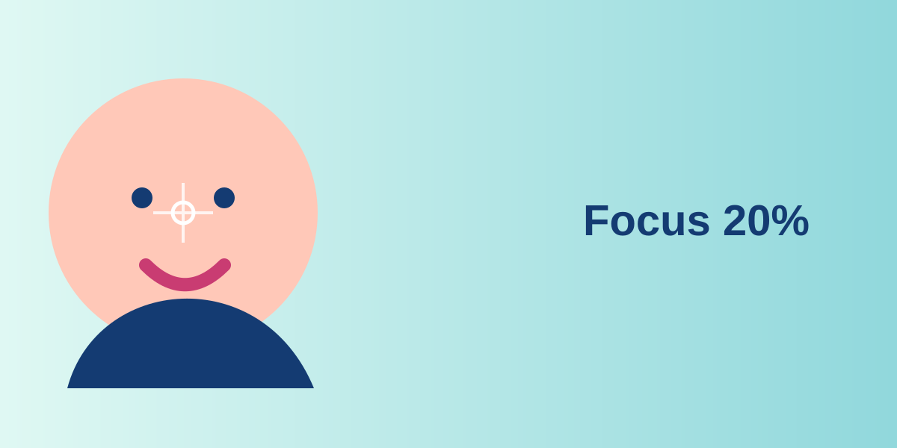
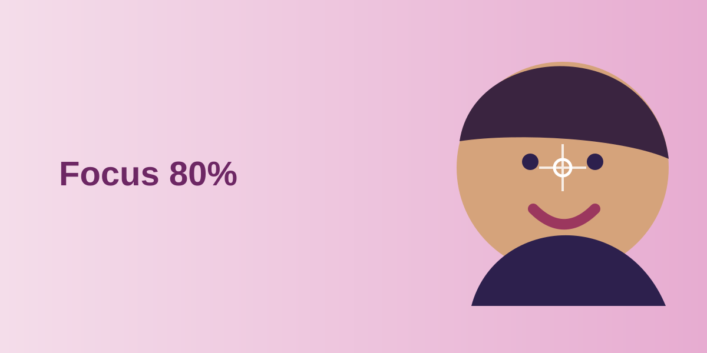

 Acné Piel grasa o con tendencia acneica: descubre una rutina sencilla para cuidarla. Discover
 Caspa ¿Qué tipo de caspa tienes? Sensibilidad del cuero cabelludo, alteraciones en la producción de sebo o proliferación de hongos pueden necesitar respuestas diferentes. Discover